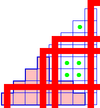

P- and Q- functions
Kevin Purbhoo
and Frank Sottile

|  |
The Horn recursion for Schur P- and Q- functions Kevin Purbhoo and Frank Sottile |
|
Une des conséquences du travail de Klyachko et de Knutson-Tao est un
système de récurrences de Horn pour déterminer quand un coefficient
de Littlewood-Richardson est non nul. En bref, un tel coefficient est
non nul si et seulement si il satisfait une collection d'inégalités
de type Horn, dont les indices sont des coefficients de
Littlewood-Richardson plus petits et non nuls. Il existe des nombres de
Littlewood-Richardson comparables pour les P- et Q- fonctions de
Schur. En utilisant des outils provenant combinatoire des systèmes de
racines, d'algèbre linéaire dans le contexte des algébre de Lie,
et de la géométrie des variétés de drapeaux cominiscules, nous
obtenons un système de récurrences de type Horn pour déterminer
quand cette
famille de nombres de Littlewood-Richardson sont non nuls. Ces
inégalités sont basées sur les nombres de Littlewood-Richardson
habituels, et m\^eme si les deux systèmes sont très différents, ils
ont la m\^eme solution.
Une autre conséquence de ce travail est une nouvelle
récurrence de type Horn pour les coefficients Littlewood-Richardson
habituels.